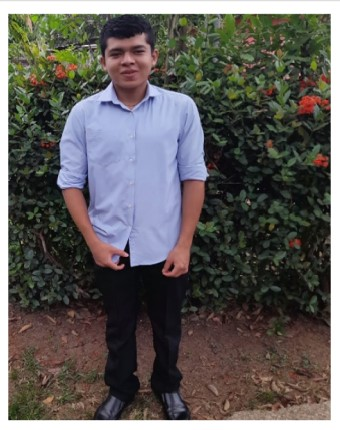

Autobiografìa
Jorge Cerrud

Me llamo Cerrud Jorge y nací el 11 de mayo de 2007, por lo que tengo 17 años. Mis padres son Andrés Gonzales y Aminta Zambrano, dos personas que siempre me han apoyado en todo lo que hago. Tengo una hermana menor llamada Andrea, que tiene 12 años. A pesar de nuestra diferencia de edad, tenemos una relación muy cercana, y me encanta compartir momentos con ella.
Actualmente, estudio en el Colegio Fermín Naudeau, donde curso mi último año de secundaria. Este es un período muy emocionante y desafiante para mí, ya que me preparo para el próximo capítulo de mi vida. A lo largo de mi tiempo en el colegio, he aprendido mucho, tanto en lo académico como en lo personal. Las experiencias y amistades que he hecho aquí han sido fundamentales para mi crecimiento.
Soy una persona que valora mucho a su familia y amigos, y trato de mantenerme enfocado en mis estudios mientras también disfruto de mis hobbies y pasatiempos. Aunque todavía no tengo claro qué camino seguiré en el futuro, tengo muchas ganas de enfrentar los retos que vengan y aprovechar las oportunidades que se presenten.